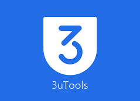

<!DOCTYPE html>
<html lang="es">
<head>
    <meta charset="UTF-8">
    <meta name="viewport" content="width=device-width, initial-scale=1.0">
    <title>TecnoherCelular  </titulo>
    <meta name="keywords" content="Drivers,Drivers samsung, Drivers motorola, Drivers ios, Drivers iphone, Drivers huawei, Drivers lg, Drivers speadtrum, samsung, motorola, ios, iphone, huawei, qualcom. mtk, mediatek, lg, speadtrum">
    <!--stilo css-->
    <link rel="stylesheet" href="stilos.css">
    <!--font awesome-->
    <link rel="stylesheet" href="https://cdnjs.cloudflare.com/ajax/libs/font-awesome/5.14.0/css/all.min.css">
</head>
<body>
    <div class="menu-btn">
        <i class="fas fa-bars fa-2x"></i>
    </div>

    <div class="container">
        <nav class="nav-main">
            
        
            <ul class="nav-menu show">
                <li>
                    <a href="#Sam">Samsung</a>
                </li>
                <li>
                    <a href="#Mot">Motorola</a>
                </li>
                <li>
                    <a href="#Mtk">Mtk</a>
                </li>
                <li>
                    <a href="#ios">IOS</a>
                </li>
                <li>
                    <a href="#lg">Lg</a>
                </li>
                <li>
                    <a href="#hua">Huawei</a>
                </li>
                <li>
                    <a href="#red">Redmi</a>
                </li>
                <li>
                    <a href="#Spreadtrum">Spreadtrum</a>
                </li>
            </ul>

        </nav>
        <hr>


        <!--showcase-->
        <header class="showcase">
            <h2>Bienvenidos a TecnoherCelular</h2>
            <p>Aqui encontraras todos los Drivers referente a los dispositivos mobiles. Empieza descargando las herramientas adb</p>
            <a href="http://raboninco.com/1Rzpc" class="btn">Descargar<i class="fas fa-angle-double-right"></i> </a>

        </header>

        <!--newcards one-->
        <div class="newcards">
            <div id="ios">
                
                <h3>Descargar Itunes.</h3>
                <p>Itunes te ofrece el mejor drivers para que los dispositivos Iphone, Ipad, y dispositos IOS sean reconocidos en la Pc</p>
                <a href="http://raboninco.com/1Qbk8">Descargar<i class="fas fa-angle-double-right"></i></a>
            </div>      
              <div id="lg">
                
                <h3>Drivers LG.</h3>
                <p>Descarga e instala los Drivers para mobiles LG</p>
                <a href="http://raboninco.com/1S0KY">Descargar<i class="fas fa-angle-double-right"></i></a>
            </div>
            <div id="red">
                
                <h3>Drivers Redmi.</h3>
                <p>Con MI PC SUITE podras obtener los Drivers de los equipos Xiaomi o Redmi para  que tu PC lea tu movil.</p>
                <a href="http://raboninco.com/1S2am">Descargar<i class="fas fa-angle-double-right"></i></a>
            </div>
            <div id="Sam">
                
                <h3>Drivers Samsung.</h3>
                <p>Los Drivers samsung son los mas utilizados en la rama de los dispositivos moviles, en esta web encontraras mas de una manera de descargar los drivers samsung, asi como el <strong>SAMSUNG KIES</strong>  y programas como el <strong>ODIN</strong></p>
                <a href="http://raboninco.com/1NBvZ">Descargar<i class="fas fa-angle-double-right"></i></a>
            </div>
            

        </div>

        <!--cards-banner-->
        <section class="cards-banner-one">
            <div class="content" id="Mtk">
                <h2>Drivers Mtk.</h2>
                <p><strong> Los Drivers Mtk tienen como funcionalidad que la pc lea la mayoria de los equipos con procesadores MEDIATEK por ejemplo:(Bmobile, Haier, Orinokia, Blu, entre otros...) la mayoria de estos Drivers hace que el SP FLASHTOOL sea mas facil de flashear tu firmware de tu dispositivo movil.</strong></p>
                <a href="http://raboninco.com/1S3R6" class="btn">Descargar<i class="fas fa-angle-double-right"></i></a>
            </div>
            
        </section>

        
        <!--newcards two-->
        <div class="newcards">
            <div id="hua">
                
                <h3>Drivers Huawei.</h3>
                <p>Al igual que muchos dispositivos qualcom estos drivers te permite facilitar el manejo de tus archivos de tu movil en la PC.</p>
                <a href="http://raboninco.com/1S4pn">Descargar<i class="fas fa-angle-double-right"></i></a>
            </div>      
              <div id="Mot">
                
                <h3>Drivers MOTOROLA.</h3>
                <p>Motorola a diferencia de otros dispositivos moviles tiene la desventaja que no posee drivers genericos, sino que para instalar sus drivers depende de su propio programa llamado Motorola Device Manager. Para que tu PC reconozca tu equipo Motorola.</p>
                <a href="http://raboninco.com/OaAT">Descargar<i class="fas fa-angle-double-right"></i></a>
            </div>
            <div>
                
                <h3>3utools.</h3>
                <p>Esta herramienta tambien como el ITUNES te permite descargar los Drivers IOS y no solo eso tambien te permite realizar firmware y otros procesos a los equipos IOS.</p>
                <a href="http://raboninco.com/1Qbfr">Descargar<i class="fas fa-angle-double-right"></i></a>
            </div>
            <div>
                
                <h3>Samsung Kies.</h3>
                <p>Tambien hay diferentes formas de descargar los Drivers de samsung que es instalando esta herramienta Samsung kies no solamente te ofrece Drivers tambien te permite facilmente la transferencia de archivos de tu smartphone samsung a tu PC.</p>
                <a href="http://raboninco.com/1S5Sn">Descargar<i class="fas fa-angle-double-right"></i></a>
            </div>
            

        </div>

        
        <section class="cards-banner-two">
            <div class="content" id="Spreadtrum">
                <h3>Drivers Spreadtrum.</h3>
                <p><strong>Al igual que los Drivers Mtk, los Spreadtrum tambien son muy conocidos por su procesadores en ellos No radica un programa como tal, sino que estos son mas para equipos genericos como por ejemplo( Blu, Ontop, Global, entre otros...); su firmware se pasa con una herramienta llamada SPD UPGRADE TOOL</strong></p>
                <a href="http://raboninco.com/1S62R">Descargar<i class="fas fa-angle-double-right"></i></a>
            </div>
        </section>

        <section class="sociales">
            <p>REDES SOCIALES</p>
            <div class="links">
                <a href="https://www.facebook.com/Tecnohercelular/">
                    <i class="fab fa-facebook-f"></i>

                </a>
                <a href="https://www.instagram.com/tecnohercelular/?hl=es-la">
                    <i class="fab fa-instagram"></i>

                </a>
                <a href="https://www.youtube.com/channel/UCtaq3M83Pnl1fch-oCCBHmA">
                    <i class="fab fa-youtube"></i>

                </a>
            </div>

        </section>

    </div>

    <div class="footer-links">
        <div class="footer-container">
            <ul>
                <li>
                    <a href="#">
                        <h3>Descargar los ODiN</h3>
                    </a>
                </li>
                <li>
                    <a href="http://raboninco.com/1S7IZ">Odin_v3.07</a>
                </li>
                <li>
                    <a href="http://raboninco.com/1S7LR">Odin_v3.09</a>
                </li>
                <li>
                    <a href="http://raboninco.com/1S7PZ">Odin_v3.10.0</a>
                </li>
                <li>
                    <a href="http://raboninco.com/1S7T3">Odin_v3.10.5</a>
                </li>      
                <li>
                    <a href="http://raboninco.com/1S7w9">Odin_v3.10.6</a>
                </li>      
                <li>
                    <a href="http://raboninco.com/1S82J">Odin_v3.10.7</a>
                </li>      
                <li>
                    <a href="http://raboninco.com/1S86L">Odin_v3.11.1</a>
                </li>      
                <li>
                    <a href="http://raboninco.com/1S87z">Odin_v3.11.2</a>
                </li>      
                <li>
                    <a href="http://raboninco.com/1S8Ao">Odin_v3.12.3</a>
                </li>      
                <li>
                    <a href="http://raboninco.com/1S8Cm">Odin_v3.12.4</a>
                </li>      
                <li>
                    <a href="http://raboninco.com/1S8Ej">Odin_v3.12.5</a>
                </li>      
                <li>
                    <a href="http://raboninco.com/1S8Ha">Odin_v3.13.1</a>
                </li>      
                <li>
                    <a href="http://raboninco.com/1S8Jj">Odin_v3.13.3</a>
                </li>      
                <li>
                    <a href="http://raboninco.com/1S8Pe">Odin_v3.14.4</a>
                </li>      


            </ul>
            <ul>
                <li>
                    <a href="#">
                        <h3>FLASHTOOL</h3>
                    </a>
                </li>
                <li>
                    <a href="http://raboninco.com/1SB3s">SP_Flash_Tool_v3.1224.0.100</a>
                </li>
                <li>
                    <a href="http://raboninco.com/1SB79">SP_Flash_Tool_v5.1524.00.000</a>
                </li>
                <li>
                    <a href="http://raboninco.com/1SB9Y">SP_Flash_Tool_v5.1628</a>
                </li>
                <li>
                    <a href="http://raboninco.com/1SBBR">SP_Flash_Tool_v5.1736</a>
                </li>    
                <li>
                    <a href="http://raboninco.com/1SBU0">SP_Flash_Tool_v5.1924</a>
                </li>   

            </ul>
            <ul>
                <li>
                    <a href="#">
                        <h3>Otros Firmware</h3>
                    </a>
                </li>
                <li>
                    <a href="http://raboninco.com/1SBhd">LG Bridge</a>
                </li>
                <li>
                    <a href="http://raboninco.com/1SBl2">HISUITE</a>
                </li>
                <li>
                    <a href="http://raboninco.com/Oiag">LG TOOL</a>
                </li>
                <li>
                    <a href="http://raboninco.com/1SBuQ">Spreadtrum para W10</a>
                </li>      

            </ul>
           
        </div>
    </div>

    <footer class="footer">
        <h3>TecnoherCelular Copyright</h3>
    </footer>

    <!--scooll reveal-->
    <script src="https://unpkg.com/scrollreveal"></script>
    <!--custom js-->
    <script src="main.js"></script>
</body>
</html>
